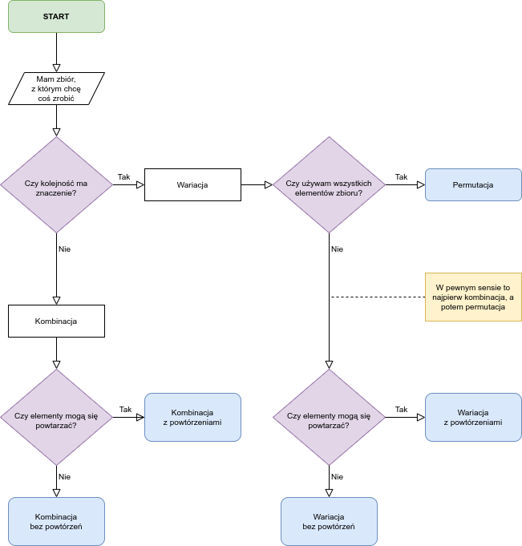

import itertools
import pandas as pd
def variations(iterable, subset_length):
'''Kombinacje w wierszach, permutacje w kolumnach, wszystko razem to wariacje'''
df = pd.DataFrame([list(itertools.permutations(x)) for x in itertools.combinations(iterable, subset_length)]).T
df.index = range(1, len(df.index) + 1)
df.columns = range(1, len(df.columns) + 1)
return dfKombinatoryka
Kombinatoryka to część matematyki zajmująca się modyfikacjami zbiorów. Weźmy sobie zbiór 5 pierwszych liter alfabetu i nazwijmy go Z jak zbiór. Zacznę od skomplikowanie brzmiącego wstępu, a potem wyjaśnię to na przykładach.
Z = ["A", "B", "C", "D", "E"]Z tym zbiorem mogę zrobić kilka rzeczy. Mogę go zacząć rozbijać na mniejsze zbiory. Mogę zacząć przestawiać w nim elementy. Mogę najpierw rozbić go na mniejsze zbiory, a potem przestawiać elementy w tych małych zbiorach. Każda z tych akcji ma swoją własną nazwę. Jeżeli mówię, że:
- permutuję – zmieniam kolejność elementów;
- kombinuję – rozbijam swój zbiór na mniejsze zbiory (combine – łączyć; łączę stare elementy na nowo).
Kiedy robię permutacje, z góry zakładam, że kolejność ma znaczenie. Jest wiele sytuacji, w których kolejność ma znaczenie, ale są też sytuacje, w których liczy się tylko to, jakie mam elementy, a nie w jakiej są kolejności. Dla przykładu nieważne, czy w losowaniu Lotto wyciągnięto 2, 5, 7 czy 7, 5, 2 – jeśli mamy te liczby na swoim kuponie, możemy dostać nagrodę. Jeśli kolejność ma znaczenie, mówimy o wariacjach, a jeśli znaczenia nie ma, mówimy o kombinacjach.
Przed chwilą mówiłem, że zmiana kolejności to permutacja, a potem nagle używam słowa wariacja. Istnieje pomiędzy nimi pewna różnica, polegająca na tym, czy zmieniam kolejność w całym naszym zbiorze, czy wcześniej rozbijam go na mniejsze zbiory. Słowem permutacja określamy zmiany kolejności w całym zbiorze, zaś o wariacjach mówimy wtedy, gdy przed zmianą kolejności rozbijamy nasz zbiór na mniejsze zbiory.
Permutacje
Omówmy to na przykładzie naszego zbioru liter od A do E. Permutacja tego zbioru będzie wyglądała tak:
pd.DataFrame(itertools.permutations(Z))| 0 | 1 | 2 | 3 | 4 | |
|---|---|---|---|---|---|
| 0 | A | B | C | D | E |
| 1 | A | B | C | E | D |
| 2 | A | B | D | C | E |
| 3 | A | B | D | E | C |
| 4 | A | B | E | C | D |
| ... | ... | ... | ... | ... | ... |
| 115 | E | D | A | C | B |
| 116 | E | D | B | A | C |
| 117 | E | D | B | C | A |
| 118 | E | D | C | A | B |
| 119 | E | D | C | B | A |
120 rows × 5 columns
Ze zbioru 5 liter możemy zatem wytworzyć 120 zbiorów, każdy z inną kolejnością liter. Policzyć jest to dość łatwo. Mamy 5 miejsc i 5 liter, które możemy tam umieścić: \(P_5 = \_ \times \_ \times \_ \times \_ \times \_\). Na pierwszym miejscu możemy umieścić 5 liter: \(P_5 = 5 \times \_ \times \_ \times \_ \times \_\). Ponieważ jedną literę już zużyliśmy, do drugiego miejsca możemy wsadzić tylko jedną z 4 pozostałych liter: \(P_5 = 5 \times 4 \times \_ \times \_ \times \_\). Uzupełniając nasz schemacik dalej otrzymujemy równanie \(P_5 = 5\times 4 \times 3 \times 2 \times 1 = 5! = 120\). 5! (czyt. pięć silnia) to skrótowy zapis mnożenia liczb od 1 do 5. Powstaje nam z tego wzór na liczbę możliwych permutacji n elementów:
\[ P_n = n! \]
Wariacje
Ciekawie zaczyna się robić, gdy przed zmianą kolejności chcemy jeszcze rozbić nasz zbiór na mniejsze zbiory. Dla przykładu możemy sobie wyobrazić, że chcemy z naszego zbioru 5 liter wybrać wszystkie możliwe zbiory po 2 litery, np. AB, AC, AD itd. Mamy do dyspozycji mniej miejsca, niż liter w zbiorze. Liczenie czegoś takiego jest analogiczne. Na pierwszym miejscu może pojawić się 1 z 5 liter, na drugim tylko 1 z 4: \(V^2_5 = 5 \times 4 = 20\). Powinno więc istnieć 20 takich zbiorów. Wypiszmy je wszystkie.
variations(Z, 2)| 1 | 2 | 3 | 4 | 5 | 6 | 7 | 8 | 9 | 10 | |
|---|---|---|---|---|---|---|---|---|---|---|
| 1 | (A, B) | (A, C) | (A, D) | (A, E) | (B, C) | (B, D) | (B, E) | (C, D) | (C, E) | (D, E) |
| 2 | (B, A) | (C, A) | (D, A) | (E, A) | (C, B) | (D, B) | (E, B) | (D, C) | (E, C) | (E, D) |
Żeby wyprowadzić wzór na takie wariacje, musimy zwrócić uwagę na fakt, że nasze obliczenie \(5 \times 4\) wygląda jak kawałek silni. Brakuje tylko \(3 \times 2 \times 1\). Moglibyśmy więc zapisać to w taki sposób:
\[ V^2_5 = 5 \times 4 = \frac{5 \times 4 \times 3 \times 2 \times 1}{3 \times 2 \times 1} = \frac{5!}{3!} \]
W taki sposób \(3 \times 2 \times 1\) skróci się i zostanie tylko \(5 \times 4\). Jeśli mielibyśmy 3 miejsca, chcielibyśmy uzyskać \(5 \times 4 \times 3\), a więc w mianowniku zapisalibyśmy tylko \(2 \times 1\), czyli ostatecznie \(\frac{5!}{2!}\). Powstaje nam z tego następujący wzór na liczbę wariacji n elementów po k elementów (czyli rozbicie w podzbiory po k elementów):
\[ V^k_n = \frac{n!}{(n-k)!} \]
Spróbujmy wypisać wariacje naszego zbioru po 3 elementy.
variations(Z, 3)| 1 | 2 | 3 | 4 | 5 | 6 | 7 | 8 | 9 | 10 | |
|---|---|---|---|---|---|---|---|---|---|---|
| 1 | (A, B, C) | (A, B, D) | (A, B, E) | (A, C, D) | (A, C, E) | (A, D, E) | (B, C, D) | (B, C, E) | (B, D, E) | (C, D, E) |
| 2 | (A, C, B) | (A, D, B) | (A, E, B) | (A, D, C) | (A, E, C) | (A, E, D) | (B, D, C) | (B, E, C) | (B, E, D) | (C, E, D) |
| 3 | (B, A, C) | (B, A, D) | (B, A, E) | (C, A, D) | (C, A, E) | (D, A, E) | (C, B, D) | (C, B, E) | (D, B, E) | (D, C, E) |
| 4 | (B, C, A) | (B, D, A) | (B, E, A) | (C, D, A) | (C, E, A) | (D, E, A) | (C, D, B) | (C, E, B) | (D, E, B) | (D, E, C) |
| 5 | (C, A, B) | (D, A, B) | (E, A, B) | (D, A, C) | (E, A, C) | (E, A, D) | (D, B, C) | (E, B, C) | (E, B, D) | (E, C, D) |
| 6 | (C, B, A) | (D, B, A) | (E, B, A) | (D, C, A) | (E, C, A) | (E, D, A) | (D, C, B) | (E, C, B) | (E, D, B) | (E, D, C) |
Tabela jest bardziej rozbudowana, ale wszystko zgadza się z naszymi poprzednimi wnioskami:
\[ V^3_5 = \frac{5!}{(5-3)!} = \frac{5!}{2!} = \frac{5 \times 4 \times 3 \times 2 \times 1}{2 \times 1} = 5 \times 4 \times 3 = 20 \times 3 = 60 \]
Czyli wariacji po 3 elementy jest w naszym przykładzie 3 razy więcej, niż wariacji po 2 elementy.
Kombinacje
Możemy zwrócić uwagę, że tabela powyżej ma ściśle określoną strukturę. W pierwszej kolumnie wszystkie podzbiory składają się z literek A, B i C ułożonych na różne sposoby. Można więc powiedzieć, że podzbiory w każdej kolumnie to dla siebie permutacje, bo składają się z tych samych elementów, różnią się tylko kolejnością. Widzimy więc, że ze zbioru 5 literek możemy wybrać 10 różnych zestawów literek, a w każdym z tych zestawów można ułożyć literki na 6 sposobów, co daje łącznie 60 wariacji. Wariacje możemy więc uzyskać tak, że weźmiemy wszyskie unikalne mniejsze zestawy literek, a potem rozpiszemy permutacje każdego z tych zestawów. Takie unikalne zestawy literek, bez zwracania uwagi na ich kolejność, to kombinacje. W tabeli każdy wiersz to pełny zestaw kombinacji. Wynika nam z tego inny wzór na liczbę wariacji:
\[ V^k_n = C^k_n \times P_k \]
Są to w rzeczywistości wymiary naszej tabeli. Liczba kombinacji (tj. unikalnych zestawów) to liczba kolumn, a liczba permutacji to liczba wierszy. Tabela powyżej ma wymiary \(6 \times 10\), bo mamy 10 unikalnych zestawów po 3 elementy i każdy taki zestaw da się ułożyć na 6 różnych sposobów, co ostatecznie daje 60 komórek.
Żeby wyprowadzić wzór na liczbę kombinacji, możemy wykorzystać fakt, że wiemy, jak się liczy liczbę wariacji i permutacji. W powyższej tabeli mamy 60 wariacji, a każda kombinacja ma 6 możliwych permutacji. Żeby więc pozbyć się informacji o permutacjach, musimy podzielić 60 wariacji na 6. Podstawiając do wzoru:
\[ V^3_5 = C^3_5 \times P_3 \] \[ 60 = C^3_5 \times 6\ |\div 6 \] \[ C^3_5 = \frac{60}{6} = 10 \]
Czyli jeśli mamy tabelę z 6 wierszami i ilomaś komulmnami, która ma 60 komórek, to kolumn musi być 10.
Możemy do naszego nowego wzoru podstawić wzory na liczbę wariacji i permutacji i w ten sposób uzyskać ogólny wzór na liczbę kombinacji:
\[ V^k_n = C^k_n \times P_k \] \[ \frac{n!}{(n-k)!} = C^k_n \times k! \ |\div k! \] \[ C^k_n = \frac{\frac{n!}{(n-k)!}}{k!} = \frac{n!}{k!(n-k)!} = \binom{n}{k} \]
Wzór ten doczekał się nawet własnego symbolu zwanego dwumianem Newtona \(\binom{n}{k}\) (czyt. en nad ka). Dla przykładu liczba kombinacji 5 elementów po 3 elementy oznacza się jako 5 nad 3 i liczy tak:
\[ \binom{5}{3} = \frac{5!}{3!(5-3)!} = \frac{5!}{3!2!} = \frac{5 \times 4 \times 3 \times 2 \times 1}{(3 \times 2 \times 1) \times (2 \times 1)} = 10 \]
Powtórzenia
Do tej pory omówiliśmy wariacje i kombinacje bez powtórzeń. Innymi słowy litera raz użyta nie mogła zostać użyta ponownie. Spotykaliśmy zbiory ABC, ale nie spotkaliśmy zbioru AAA. Wariacje i kombinacje mogą pozwalać na takie powtórzenia. Wariacje możemy policzyć jak zawsze kreskami. W zbiorze Z mamy 5 liter i chcemy zrobić z niego podzbiory po 2 elementy ze zwracaniem (czyli po wylosowaniu wraca do puli, czyli z powtórzeniami). Na pierwszym miejscu może być 5 liter, ale na drugim miejscu także może być 5 liter, bo litery się nie zużywają. Wychodzi nam więc takie działanie:
\[ \bar{V}^2_5 = 5 \times 5 = 5^2 = 25 \]
Wychodzi nam z tego prosty wzór na liczbę wariacji n elementów po k elementów z powtórzeniami:
\[ \bar{V}^k_n = n^k \]
Wzór na kombinacje z porwtórzeniami podaję raczej pro forma, bo rzadko jest używany.
\[ \bar{C}^k_n = \binom{k+n-1}{k} = \frac{(k+n-1)!}{k!(n-1)!} \]
Podsumowanie
Permutacje to zmiany kolejności, kombinacje to unikalne podzbiory. Jeśli zaczniemy robić permutacje unikalnych podzbiorów, wyjdą nam wariacje. Albo patrząc inaczej – permutacje to wariacje \(V^n_n\). Permutacje i wariacje możemy liczyć kreskami i silnią. liczbę kombinacji uzyskamy dzieląc liczbę wariacji po k elementów przez liczbę permutacji k. Powstały wzór oznacza się symbolem Newtona \(\binom{n}{k}\). Pomocny może okazać się poniższy schemat.
